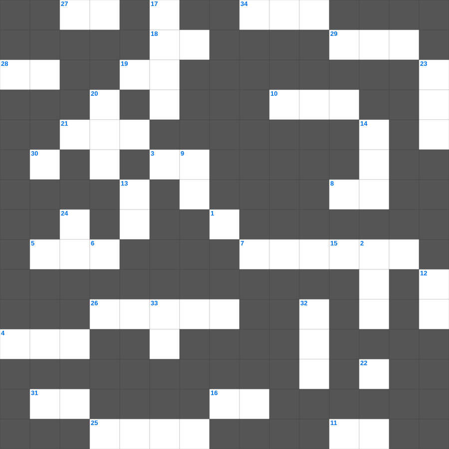

사도행전 마스터 100 (2/2)
📌 서비스 정의
십자가로세로는 교회 주보와 주일학교에서 사용할 수 있는 성경 기반 가로세로 퍼즐 서비스입니다. 성경 인물, 사건, 핵심 구절을 바탕으로 제작되었습니다. 온라인 풀이 및 인쇄 기능을 제공합니다.
📖 사도행전란?
사도행전은 부활하신 예수님의 명령에 따라 예루살렘에서 시작된 교회의 탄생과 바울의 선교 여정을 기록합니다. 성령 강림, 초대 교회의 성장, 이방인 선교가 핵심이며 총 28장입니다.
📚 사도행전의 주요 사건·주제
오순절 성령 강림 · 초대 교회의 형성과 성장 · 스데반의 순교와 사울의 등장 · 바울의 회심 · 바울의 선교 여행들
사도행전의 말씀을 퀴즈로 배우는 사도행전 주일학교 퀴즈입니다. 가로 힌트와 세로 힌트를 보고 35개의 단어를 맞춰보세요. 인쇄도 가능하고 정답 확인도 바로 되니 소그룹 모임이나 가정 예배 시간에도 활용하실 수 있습니다.

📝 가로 힌트
1. 이것의 것을 생각하고 땅의 것을 생각하지 말라
2. 너는 이웃과 더불어 다투거든 이것만 분별하고 남의 은밀한 일은 누설하지 말라
3. 성전 완공 후 제사장과 레위인을 세운 기준 '이것의 책에 기록된 대로'
4. 바사 왕 고레스 제삼년에 다니엘이 이것이라 이름한 벨드사살에게 한 일이 나타났으니
5. 지혜로운 자의 마음은 초상집에 있으되 우매한 자의 마음은 이것에 있느니라
7. 아내의 부정 의심이 생길 때 드리는 제사
8. 재판장은 외모로 보지 말고 이것을 받지 말라
10. 그 사방 광채의 모양은 비 오는 날 구름에 있는 이것 같으니 이는 여호와의 영광의 형상의 모양이라
11. 악인은 쫓아오는 자가 없어도 도망하나 의인은 사자 같이 이것하니라
15. 홍수 후 방주에서 나온 노아가 제일 먼저 한 일
16. 야곱이 외삼촌 집에서 얻은 아들 수
18. 엘리후가 욥의 세 친구에게 화를 낸 이유 '능히 이것하지 못하면서도 정죄함'
19. 사로잡힌 지 스물다섯째 해... 그 달 열째 날에 여호와의 권능이 내게 임하여 나를 데리고 이스라엘 땅으로 가시되 이것을 보여주시니라
21. 느헤미야에게 예루살렘의 소식을 전해준 형제
22. 지혜의 그늘 아래에 있음은 이것의 그늘 아래에 있음과 같으나
25. 속건제를 드릴 때 보상하는 액수는 원래의 이것에 1/5을 더함
26. 아이 성 전투에서 죽은 이스라엘 사람 수
27. 아닥사스다 왕이 에스라에게 붙여준 칭호 '하늘의 하나님의 이것의 학자'
28. 심중에라도 왕을 저주하지 말며 침실에서라도 이것을 저주하지 말라
29. 홍수 때 비가 내린 기간
📝 세로 힌트
2. 다윗이 왕위에 있었던 총 기간
6. 전쟁에 나갈 때 두려워하는 자는 이것으로 돌려보내라
9. 이스라엘은 하나님을 섬기겠느냐는 질문에 몇 번 대답했나
12. 재판할 때 가난한 자나 세력 있는 자를 이것하지 말라
13. 수고하고 무거운 짐진 자들아 다 내게로 오라 내가 너희를 이것케 하리라
14. 유다인들이 대적을 죽였으나 무엇에는 손을 대지 않았나
17. 모세를 석 달 동안 숨겼다가 넣어 띄운 것
20. 바울의 선교 동역자, 위로의 아들
23. 에스겔의 예언 사역지
24. 고운 것도 거짓되고 아름다운 것도 헛되나 오직 여호와를 경외하는 이것은 칭찬을 받을 것이라
30. 지혜로운 자의 교훈은 생명의 이것이니 사망의 그물에서 벗어나게 하느니라
32. 칠 년마다 돌아오는 정기적인 율법 낭독 시기
33. 성벽 재건 중 대적들이 비웃으며 한 말 '이것이 올라가도 무너지리라'
🧩 이 퍼즐에서 배우는 내용
이 퍼즐은 사도행전 마스터 100 (2/2)의 핵심 단어와 개념을 자연스럽게 복습할 수 있도록 구성되었습니다. 주일학교 수업이나 개인 성경공부에서 학습 내용을 점검하는 용도로 바로 활용할 수 있습니다.
🧑🏫 교회 교육 자료 활용
이 퍼즐은 주일학교 교재 추천 자료로 활용할 수 있고, 주일학교 주보에 넣기 좋은 분량으로 구성되어 있습니다. 수업용 주일학교 교안에 활동지로 붙이거나, 예배 후 복습용 주일학교 공과교재로 바로 사용할 수 있습니다.
🏷️ 키워드
사도행전 주일학교 퀴즈, 사도행전, 십자가로세로, 성경퀴즈, 말씀퀴즈, 가로세로퍼즐, 주일학교 교재 추천, 주일학교 주보, 주일학교 교안, 주일학교 공과교재